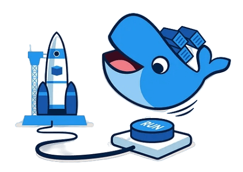

Fundamentos y usos prácticos de Docker
Clase 7 :
Docker Compose - Parte II
Depuración de contenedores
Temas de clase 7:
Docker compose parte II
Docker Compose
Parte II
Docker compose : Parte II
Docker compose tiene un gran número de atributos que pueden configurarse. Se pueden ver todas las disponibles para servicios hasta el momento en Docker Docs: Services top-level elements. A continuación veremos solo algunas a modo de ejemplo.
container_name
De la misma manera que hacíamos con docker run --name podemos asignar un nombre
a nuestros servicios para que no asigne el nombre por defecto establecido por Docker
Compose.
service:
web:
container_name: mi-contenedor-web
De esa manera podemos setear mi-contenedor-web como nombre. De lo contrario el
nombre que se asigna es [NOMBRE_CARPETA]-[NOMBRE_SERVICIO]-N
Environment
El campo environment en Docker Compose permite definir variables de entorno que un contenedor utilizará durante su ejecución.
¿Por qué es importante?
Las variables de entorno son una buena práctica para manejar configuraciones, como nombre de servidores que el contenedor debe establecer conexiones, puertos, contraseñas*, API keys*, etc., fuera del código fuente.
services:
app:
image: "mi-app:latest"
environment:
- DB_HOST=db
- DB_PORT=3306
Environment file
Una mejor opción es tener las variables de entorno en un archivo separado del archivo compose. De manera que podríamos compartir o subir a un repositorio nuestro archivo compose sin compartir información sensible.
Por lo general se usa un archivo .env pero es posible también especificarlo en
el compose.
services:
app:
env_file: "webapp.env"
El formato del archivo env debe ser:
POSTGRES_VERSION=14
PG_HOST=db
Interpolation
Los valores en un archivo compose pueden ser seteados por variables de entorno e interpoladas en tiempo de ejecución.
Los archivos compose usan una sintaxis Bash-like: ${VARIABLE} y
$VARIABLE.
Supongamos que tenemos un archivo .env con el siguiente contenido:
TAG=v1.5
services:
web:
image: "webapp:${TAG}" # webapp:v1.5
Docker compose puede obtener variables interpoladas desde: la shell local o archivos .env
Docker Docs: Compose Interpolationhealthcheck
El atributo healthcheck declara una comprobación que se ejecuta para determinar si los contenedores están "en buen estado" o no.
De la siguiente manera podríamos comprobar si un contenedor web está OK.
healthcheck:
test: ["CMD", "curl", "-f", "http://localhost"]
interval: 1m30s
timeout: 10s
retries: 3
start_period: 40s
Depends_on
El campo depends_on define las dependencias entre servicios en Docker Compose, especificando el orden en el que se inician los servicios.
services:
web:
image: "nginx:alpine"
depends_on:
- db
db:
image: "postgres:alpine"
En este ejemplo, el servicio web depende de que el servicio db (PostgreSQL) se inicie primero. Esto asegura que la base de datos esté en marcha antes de intentar iniciar el servidor web.
Depends_on healthy
La dependencia de un contenedor de otro, puede combinarse con el estado de salud de otro. Para aceptar que se inicie solo si ya el servicio se encuentra OK.
services:
web:
build: .
depends_on:
db:
condition: service_healthy
db:
image: posgres
healthcheck:
....
Volumenes externos
Hasta ahora hemos visto como crear volúmenes y redes dentro del mismo archivo compose. Pero... ¿si queremos usar un volúmen o red declarada en otro compose o creada manualmente con anterioridad?
services:
backend:
image: example/database
volumes:
- db-data:/etc/data
volumes:
db-data:
external: true
Redes externas
La misma lógica aplica para redes externas al compose.
services:
proxy:
image: example/proxy
networks:
- outside
- default
app:
image: example/app
networks:
- default
networks:
outside:
external: true
Otros atributos
Existen otros atributos que se pueden utilizar en un archivo Docker Compose, tales como:
- dns: Podemos especificar servidores DNS personalizados.[1]
- devices: Permite el mapeo de dispositivos del host a los contenedores. [2]
- labels: Agrega metadata a los contenedores. Puede ser usado por servicios de terceros.[3]
- networks: Especifica las redes a las que se conectará el contenedor. [4]
- network_mode: Define el modo de red para un contenedor. (por ejemplo, hosts) [5]
Para una lista completa y detallada: Compose file reference
Consultas
Docker Compose
Compose Deploy Specification
Compose Deploy Specification
La Compose Deploy Specification se refiere a cómo se pueden especificar configuraciones avanzadas de despliegue de servicios en un archivo compose usando la clave deploy.
Hay multiples opciones que nos permiten administrar los recursos que tendrá nuestra aplicación y políticas de reinicio.
resources
Permite definir límites y reservas de recursos para los contenedores. Estos recursos generalmente incluyen CPU y memoria, asegurando que los contenedores no sobrepasen ciertos límites o que tengan una cantidad mínima de recursos garantizados. Las restricciones se puede configurar como:
limits: Define los recursos máximos que un contenedor puede utilizar.reservations: Especifica la cantidad mínima de recursos que debe estar garantizada para el contenedor. Estos recursos son "reservados" para el contenedor y no pueden ser usados por otros contenedores.
Por lo general los recursos administrados son CPU y memory. El límite o reserva de CPU se hace en fracciones de CPU siendo 1 para reservar 1 CPU. En memoria, se reservan o limitan en unidades de memorias como megas, gigas, etc.
Docker Docs: Deploy Resourcesresources: limits
Si queremos limitar a un 50% de un CPU y 512M de RAM la configuración es la siguiente:
resources:
limits:
cpus: '0.50'
memory: 512M
resources:
limits:
cpus: '2.0'
memory: 1G
resources: reservations
Para reservar un 25% de un CPU y 256M de memoria, la configuración es:
resources:
reservations:
cpus: '0.25'
memory: 256M
Resources
Podemos combinar ambas opciones de recursos, reservas y límites.
services:
frontend:
image: example/webapp
deploy:
resources:
limits:
cpus: '0.50'
memory: 50M
reservations:
cpus: '0.25'
memory: 20M
Existen más capacidades de límites y reservas para contenedores: Docker docs: Deploy resources
Consultas
Containers Debug
Containers Debug
Saber qué pasa en nuestros contenedores es crucial para que podamos hacer debug o troubleshooting de nuestras aplicaciones.
Existen distintas técnicas para realizar debug en nuestros contenedores. Listaremos a continuación alguna de ellas:
Ver logs de un contenedor
Ver los logs de un contenedor nos permite obtener información de salida generada por la aplicación que está corriendo dentro del contenedor. Podemos revisar los mensajes de error, advertencias o cualquier información que el contenedor imprima en su consola.
La sintaxis es docker logs [OPTIONS] CONTAINER
OPTIONS:
--details: Muestra detalles adicionales provistos por los logs.-f, --follow: Sigue el log en tiempo real.-n, --tail: Número de líneas que se mostrará el log desde el final.-t, --timestamps: Muestra el timestamp de los registros.--since: Muestra los logs desde de un momento determinado. (timestamp, o relativo; 42m para 42 minutos)--until: Muestra los logs antes de un momento determinado. (timestamp, o relativo; 42m para 42 minutos)
Ejecutar comandos dentro de un contenedor
El comando docker exec corre un nuevo comando en un contenedor que está
corriendo. Se usa de la siguiente manera:
docker exec [OPTIONS] CONTAINER COMMAND [ARG...]
OPTIONS:
-d, --detach: Corre un comando en background.-i, --interactive: Mantiene la STDIN abierto-t, --tty: Aloca una pseudo TTY.
Ejemplos mas utilizados:
docker exec -it CONTENEDOR bash|sh: Inicia un bash o sh en modo tty interactivo
Estadísticas de contenedores
Para monitorear el uso de recursos (CPU, memoria, red, etc.) de un contenedor en tiempo real,
podemos usar docker stats. Esto es útil para identificar
problemas de rendimiento o visualizar los recursos del contenedor.
CONTAINER ID NAME CPU % MEM USAGE / LIMIT MEM % NET I/O BLOCK I/O
a857cf776355 contenedor 0.00% 544KiB / 15.51GiB 0.00% 23.5kB / 0B 8.19kB / 4.1kB
1e61070d0209 hola-web-1 0.00% 4.289MiB / 15.51GiB 0.03% 3.1kB / 0B 0B / 4.1kB
Adicionalmente, los datos pueden ser mostrado de diversas maneras, por ejemplo en un formato json para ser consumido por una aplicación.
Docker Docs: docker container statsInspeccionar el estado del contenedor
Con el comando docker inspect nos permite obtener información
detallada sobre la configuración y el estado de un contenedor. Puedes usarlo para verificar
los volúmenes montados, las redes, variables de entorno, etc. Uso:
docker inspect [OPTIONS] CONTAINERS
Por defecto devuelve un formato JSON con información del contenedor, como: ID (hash completo), restart_policy, configuración de red, mounts, limits, entre muchos otros.
Docker docs: docker container inspectdocker debug
La documentación lo describe como una shell en cualquier contenedor o imagen. Una alternativa a depurar con docker exec.
Docker Debug es un comando CLI que nos ayuda a seguir las mejores prácticas manteniendo las imágenes pequeñas y seguras. Con Docker Debug, se puede depurar las imágenes mientras contienen el mínimo indispensable para ejecutar tu aplicación.
Requiere de una suscripción PRO, Team o Business.
Docker docs: docker debug